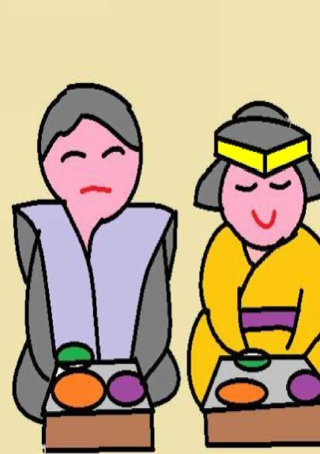
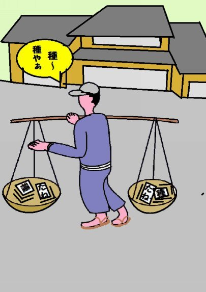
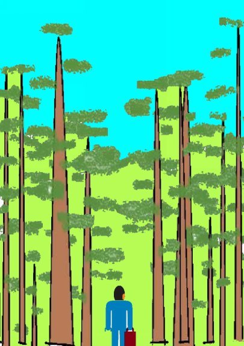
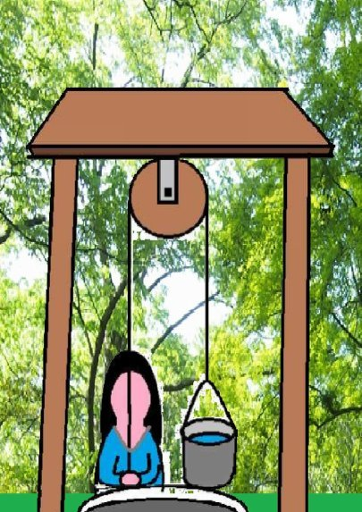
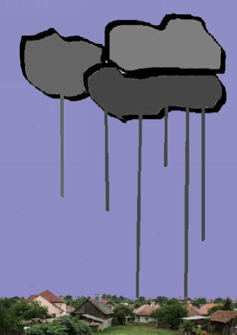
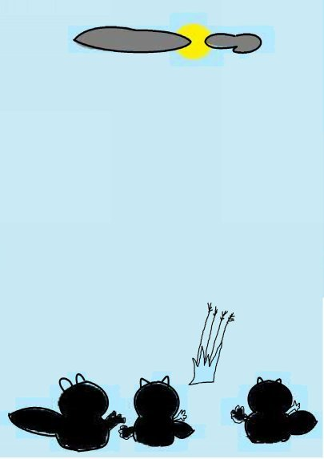
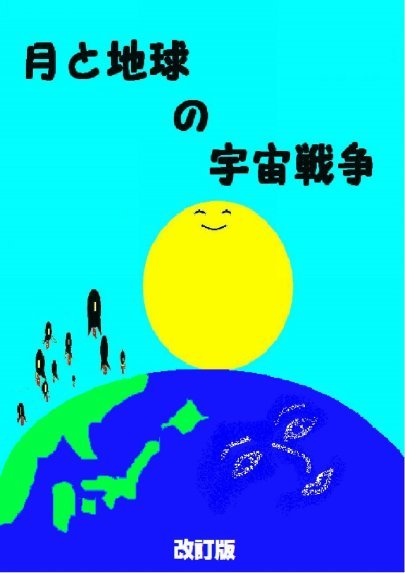

| ③種屋の若嫁さん | |
| 深川龍 | |
| UNKNOWN (2016) | |
第三話
ギンベェさんはシシキ道の竹やぶに穴を掘って住んでおったタヌキの親子が急にいなくなったのでどうしたのか気がかりじゃった。じゃが、実は何も心配はいらんことじゃった。なぜかと言えば親ダヌキと二匹の子タヌキは村の神社の社殿の床下に引っこしていただけじゃったから。
なぜにタヌキが長らく住みなれたシシキ道から引っ越したのか誰も分からん。多分、かみさんとの約束をやぶってしまったのが原因じゃろうとギンベェさんは思って
おった。
かみさんとの約束を破ったというのはタヌキが産婆のお冨さんのタバコのポイ捨てをやめさせようと煙草の火に化けたり産婦が産気づいたと嘘を知らせたことじゃよ。
さて、村の神社は深い森の中にあって高い杉の木立に囲まれておった。神社の裏は遠くシシキ道まで続く山林じゃった。タヌキの親子はおそらくこの山林を伝いにやって来たにちがいない。
神社の参道の手前に野菜や穀類の種を売る店があった。消えかけた墨の字で種屋と書かれた看板が上がっておった。
ところが、ちょうど、タヌキの親子が引っこして来た時にこの種屋に嫁取りがあった。
あの時は仲人さんや家の人たちが縁側から嫁さんを見に集まった人たちに向かって「嫁よーい、嫁よーい」とたくさんのお菓子やおもちをばらまいたもんじゃった。
タヌキの親子は夜になって草のかげに落ちて残っておった菓子やモチをひろい集めて食べた。タヌキは人間と同じように何でも食べるからのう。
最初にタヌキの親子を見つけたのはこの若嫁さんじゃった。若嫁さんは、
「きゃっ、きゃわいい」

と言っては、カボチャのにっころがしとか、ふかしたサツマイモなどを社殿の床下に差し入れてくれた。
二匹の子タヌキは若嫁さんが来ると、でんぐり返りをしたりごろごろと転がったりして見せてかわいい仕草のサービスをしたもんじゃった。
若嫁さんは子ダヌキがかわいくてならないが、大っぴらには出来ん。
「嫁が来てから、何かと食うものがなくなる。」
種屋の義母さんがいぶかしがったが、それでも若嫁さんは見つからないようにしてタヌキの親子にこっそりと食べ物を運んだもんじゃ。
「おなかの赤ちゃんが食うんじゃ。腹がへるのは仕方がなかろう。食うものぐらいは大目に見てやれば良い。」
義父さんはおうように言うたが、実は若嫁さんが神社の親子のタヌキに食べ物を運んで行くのを見てしまったのじゃ。じゃが、義父さんは知って知らぬふりをした。
「べつに、嫁に食わすのがおしい訳ではないが、ああも食うもんじゃろか。」
義母さんはあきれかえる。義父さんは笑う。
「ええやないか。嫁は大食いでも心のやさしい方がええ。」
朝早くから、婿さんと義父さんはてんびん棒の前と後ろにフゴをさげて種を売りに行く。ハンテンにモモひき、

地下タビのいで立ちじゃ。
家に残った義母さんと若嫁さんは畑仕事をする。義母さんも良う働くが、若嫁さんも良う働く。
二人はぱらぱらぱらと種をまく。ぱらぱらぱらとその上に土をかける。二匹の子ダヌキはそれがおもしろいらしい。神社の高い杉の木立の中でぱらぱらぱらと種をまくまねをする。杉の枝に上ったりして、ぱらぱらぱらと土をかけるまねをする。
日供を持って来る村人たちは時折、土や砂をかけられる。日供とは神社のお供えのことじゃから氏子が毎朝毎夕、交代でやってくるのじゃ。
「最近、神社の森では日供に行くと砂の雨が降るそうじ

ゃ。」
「そりゃ、タヌキのしわざじゃ。」
タヌキの親子はその他には何も悪さをする訳ではなかった。ぱらぱらぱらぱらとやるだけじゃった。じゃから、村人はさほど気にかけないでおった。昔からタヌキやキツネはお寺や神社に住むものとそうばが決まっておったらしいでのう。
やがて、嫁さんにやや児が生まれた。おぎゃおぎゃおぎゃとやかましい。若嫁さんが深い井戸からつるべで水をくんでいる間、ずーっと泣く。タヌキの親子はそれがおもしろい。おぎゃおぎゃおぎゃとまねをする。
それを聞いた村人は、
「タヌキの鳴き声はおぎゃおぎゃおぎゃと赤ちゃんのようじゃ。」
と言うた。
義母さんと若嫁さんは神社のそばの深い井戸からつるべで水をくむ。つるべの上のかっ車がからんころんからんころんと音を出す。からんころんと音が聞こえる間、やや児のおぎゃおぎゃという泣き声はやまない。若嫁さんが井戸で水をくんで畑にまく間、やや児はほっておかれるからじゃ。
その年はひどい日照りじゃった。小川の水がかれてど

この家でもつるべの音がからんころんと夕方まで聞こえたもんじゃった。水はまいても、まいてもじゅっと地面に吸い込まれ、すぐに蒸発してしまう。夕方までかかっても、まき水は充分には行き渡らない。
義母さんは提灯をさげてまでして畑に水をやる。若嫁さんはおぎゃおぎゃと泣くやや児が気がかりじゃった。
「おっかさん、今日はもうこのぐらいにしましょう。」
「何を言うとる。苗が枯れてもいいのか。」
若嫁さんはやや児に乳をやりに行けない。
「坊やが死んでもいいんですか。」
「死にゃせん。やや児は泣くもんじゃ。」
若嫁さんの頬に一粒、光るものがあった。
長いてんびん棒をかついで、婿さんが帰ってきた。若嫁さんの目にいっぱいにたたえられた涙が今にもせきを切って流れ出しそうじゃった。
「わたし、さとに帰ります。」
義母さんが口をはさんだ。
「やや児はここに置いて行くんじゃぞ。」
義母さんはやや児さえ置いて行けば、若嫁はすぐに戻ると思うた。
若嫁さんは提灯を下げて暗い夜道を一人で帰るという。やや児を置いて実家に帰るしか仕方がなかったのじゃ。
タヌキの親子は心配で、心配で仕方ない。見えかくれしながら、若嫁さんを実家まで見送った。そして、若嫁さんが実家に入るのを見届けて、神社の境内にもどった。
二日、三日と日がたって行く。雨は降らない。若嫁さんはもどらない。
タヌキの親子はさみしい。若嫁さんがやっていたことをまねる。
夜になって人気がなくなると、井戸のつるべを上げ下げして、かっ車をからんころんからんころんと鳴らす。やや児もつるべの音を聞くと、おぎゃおぎゃと泣き出す。親子のタヌキもおぎゃおぎゃとまねをする。高い杉の木の上から、ぱらぱらぱらと砂を落とす。
たまらないのは種屋の人たちじゃった。タヌキは夜中でも、明け方でもからんころんとやりだす。ぱらぱらぱらとやりだす。その度に、やや児がおぎゃおぎゃと泣きさけぶ。
からんころんからんころん、ぱらぱらぱら、おぎゃおぎゃ、・・・。
これじゃとてもたまらない。
「嫁さんに頭を下げてもどってもらうよりしかたがないぞ。」
義父さんの言葉に義母さんはぷいっと横を向く。
「いいや、若嫁が頭を下げてもどるまでむかえに行く必要はない。」
その翌日も夜になると、からんころんからんころん、ぱらぱらぱら、おぎゃおぎゃ、・・・とやる。
これじゃ種屋はたまらない。
「のう、わしが頭を下げて、むかえに行く。」
「勝手になさるがええ。」
雨粒がぽつりと落ちて来た。ぱらぱらと降り出し、ざっーときた。一月ぶりの雨じゃった。
土砂降りの雨の中を義父さんに連れられて若嫁さんが帰ってきた。タヌキの親子は雨にぬれながら、それをそ

っと出むかえたもんじゃった。
雨が止んだ。草も木も生き返ったようじゃった。義母さんも、若嫁さんも、もう畑に水をまく必要はない。もう、からんころんからんころん、ぱらぱらぱら、おぎゃおぎゃもなくなって、種屋も神社も静かになった。
真ん丸お月さんが高い杉のこずえに出ておった。ゆぅらゆぅらと揺れるチョウチンが神社の境内にやって来た。若嫁さんが夜の残飯を持って来てくれたのじゃった。
二匹の子ダヌキは飛び出して、月の光の中ででんぐり返りをして見せた。
若嫁さんはその後も、
「きゃっ、きゃわいい。」

と言ってはカボチャの煮っころがしとか、蒸かしたサツマイモなどを差入れた。
(完）
深川龍
の
ふしぎシリーズ⑤
月と地球の宇宙戦争
も
読んでください。

- 1 -